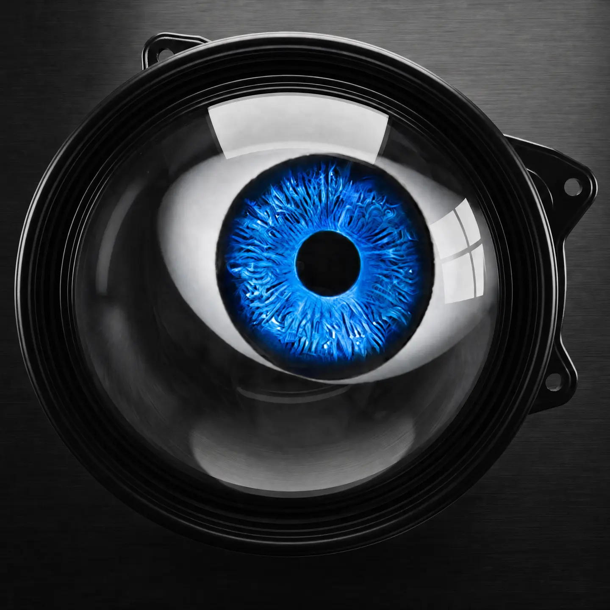
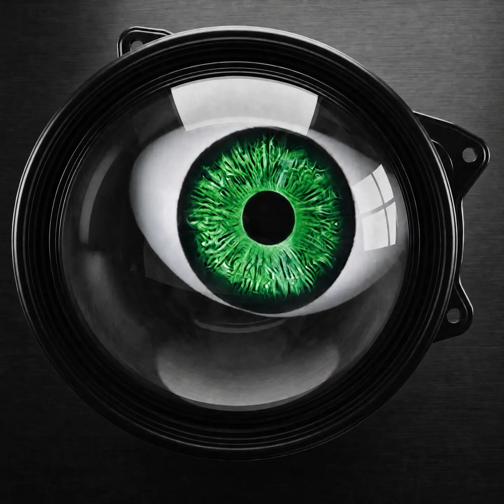
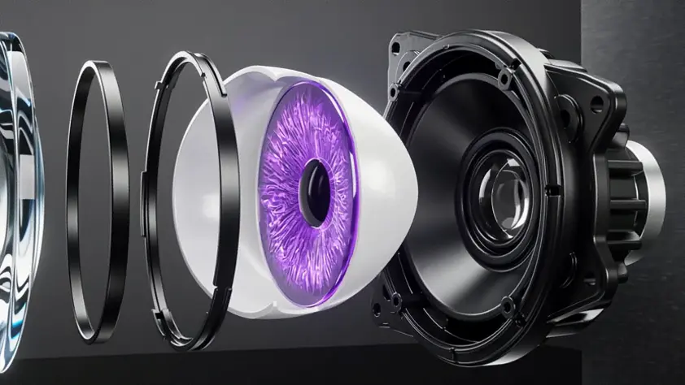

01 / OPTIC
Clear vision.
02 / IRIS
Purple intensity.
Built into the core.
03 / HOUSING
Rigid structure.
Precision aligned.
04 / MOUNT
Ready to fit.
Engineered to hold.
05 / SERIES
Choose your
gaze.
One projector. Three calibrated color signatures.


06 / CONSTRUCTION
Built in layers.
Locked on axis.
Optic, iris, housing and mount align as one compact three-inch system.
- Lens housing
- 3 in
- Input range
- 5–36 V DC
- Control
- Remote mode

07 / FITMENT
Make the first
look count.
Choose a signature. Check the housing. Build the stare.